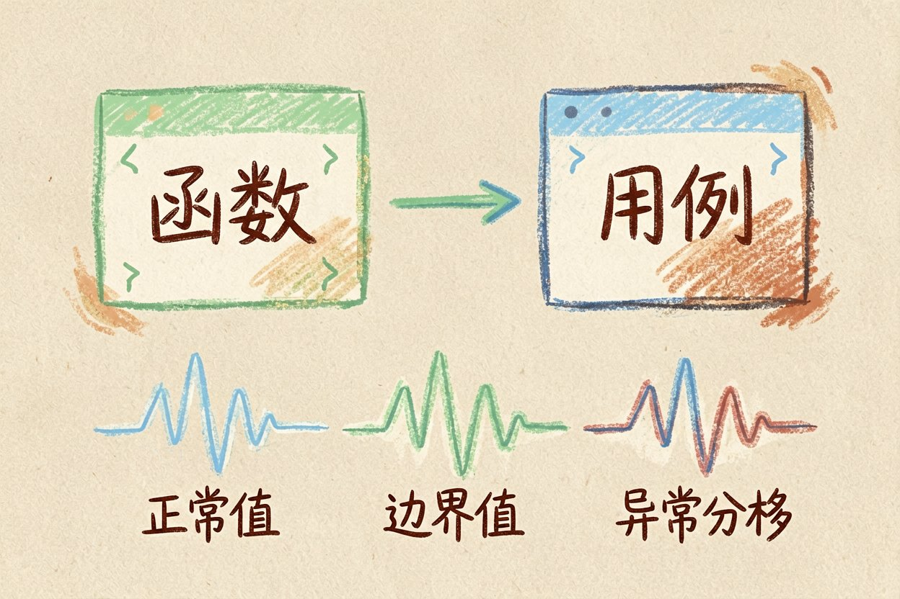
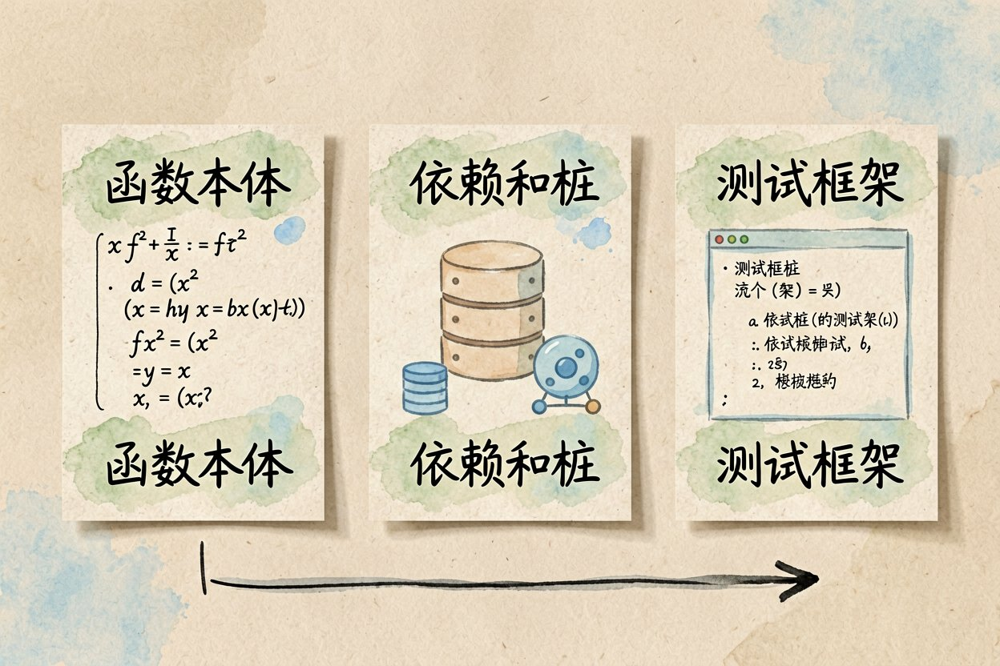

用 AI 写单元测试：把用例交给模型补
补单元测试最枯燥？把函数和上下文丢给 AI，它能帮你把正常、边界、异常三类用例一次铺开。
AI 写单元测试是什么：一句话解释

AI 写单元测试，就是把你写好的函数连同它的上下文一起丢给大模型，让它补全测试用例。正常输入、边界值、异常分支，它都能一次铺开，省掉最枯燥的手工劳动。
它和AI 调试代码是一条流水线上的两环：调试在出错后查，测试在出错前防。配合AI 代码审查，基本能覆盖大部分低级 bug。
该喂给它的上下文

第一样是函数本体。把完整实现贴出来，别只给签名，它看不到逻辑就只会写空壳断言。
第二样是依赖和桩。这个函数调了数据库或网络？告诉它，让它用 mock 替掉，测试才跑得起来。
第三样是测试框架。你用 pytest 还是 JUnit，写清楚，生成的代码才能直接跑。
请为下面这个函数写 pytest 单元测试：
函数：def divide(a, b): return a / b
要求：覆盖正常值、b=0 抛异常、a 和 b 为字符串报错三种情况，
用 pytest.raises 断言异常，每条用例写一句注释说明测什么。怎么审它生成的断言
把这些测试接进提交钩子，每次改完代码自动跑，省得写完就忘、最后全靠手点。
断言写具体，别只写「不为空」；能点出名和边界，测试才真在帮你挡 bug。
看断言是不是真的在验。它有时会写「assert result is not None」这种永远通过的废话，等于没测。
看边界有没有覆盖。除零、空字符串、极大值、负数，这些最容易漏，要逐条核对。
看命名能不能读懂。好用例名一眼知道测什么，免费 AI 补全工具生成的命名常很随意，你顺手改清楚。
在Cursor 入门教程里可以把生成测试接成保存即跑，红了的立刻改，循环很快。
覆盖率怎么看才不被骗
行覆盖高不代表测得透。它写的用例可能只走了 if 没走 else，覆盖率数字好看，分支却漏了。
要看分支和边界覆盖。条件真假两边都要有用例，才算真盖上，别被总行数糊弄。
别为凑数字加无效用例。为了覆盖率硬写「assert True」式测试，除了涨数字毫无意义。
它容易测错的地方
浮点比较它常写错。两个小数相减再直接相等，多数情况会挂，得用误差范围去比。
并发和随机它难稳。带时间戳、随机数的函数，它写的用例时灵时不灵，要你手动固定种子。
业务规则它看不全。它不知道你们那条特殊计费边界，用例漏了很正常。这类得你补。
实际项目里更稳的做法是让 AI 先补测试、你再补边界。它铺开的骨架覆盖常见路径，你专门补那些它想不到的刁钻输入，效率最高。把团队的边界用例沉淀成清单，下次直接喂给模型当参考，生成的测试会越来越贴你们的业务。测试文件名和函数名也顺手统一，日后谁接手都能一眼看懂哪段逻辑被哪条用例守着。
别把 AI 生成的测试当成覆盖率达标证明。AI 写单元测试帮你把骨架搭起来，真正决定测没测透的，还是你对业务的理解。
本文信息核对于 2026-08-14。AI 产品的价格、免费额度与功能变动频繁，实际以各工具官网当前说明为准。